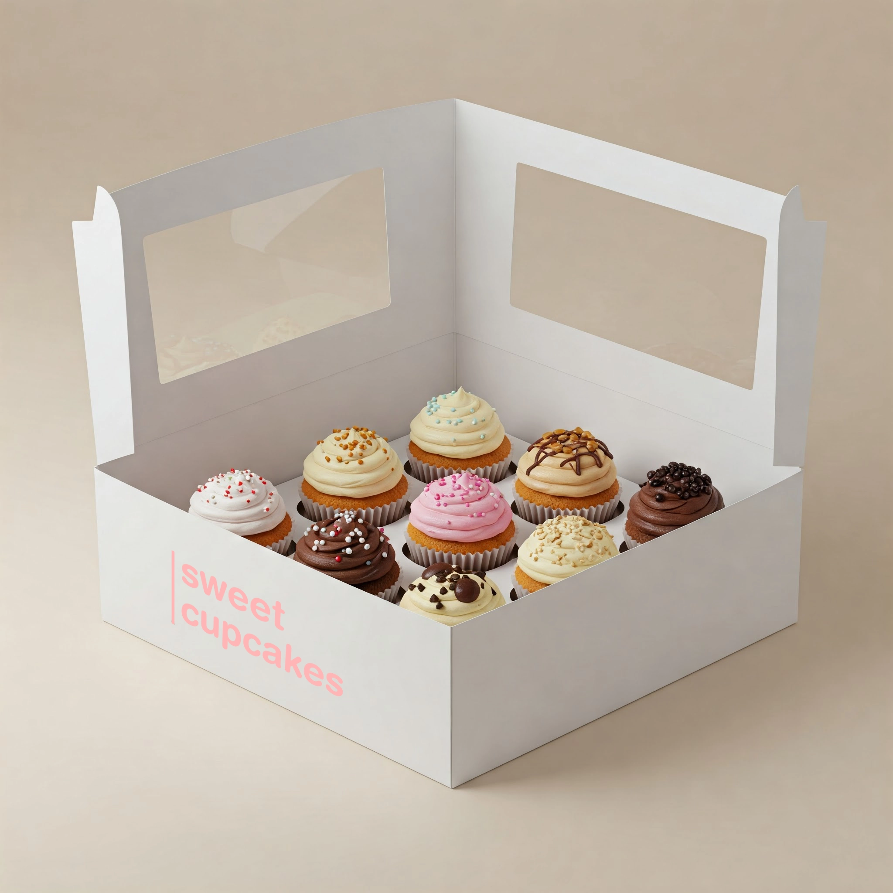
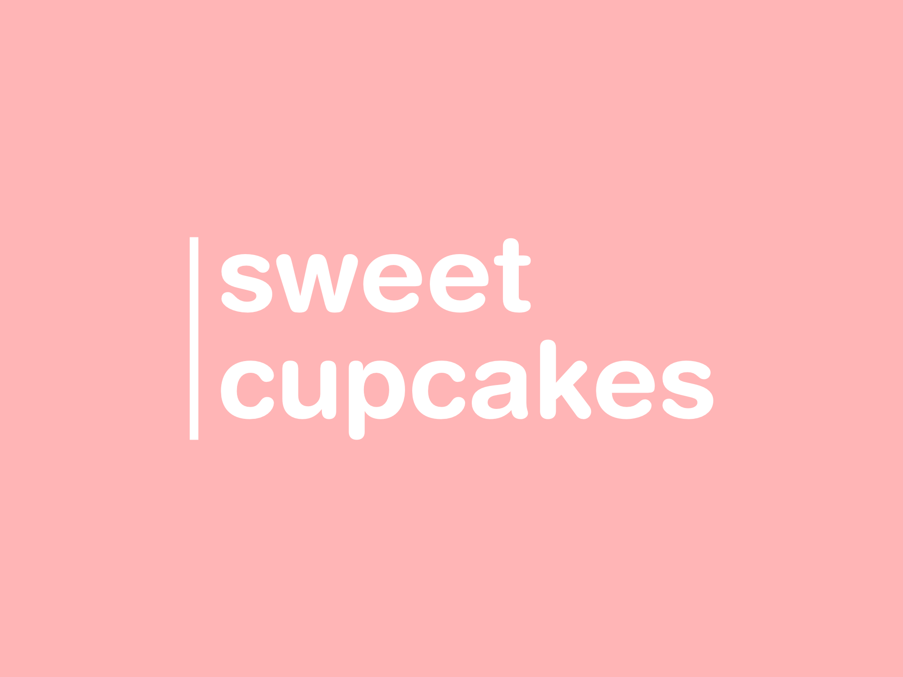

Sweet Cupcakes Bakery Logotype
- Affinity Designer
- Logo Design
- Brand Identity
- Typography
- Graphic Design
- Vector Art

The logotype is used across various branding materials including packaging, signage, and digital media to establish a consistent and professional visual presence.
